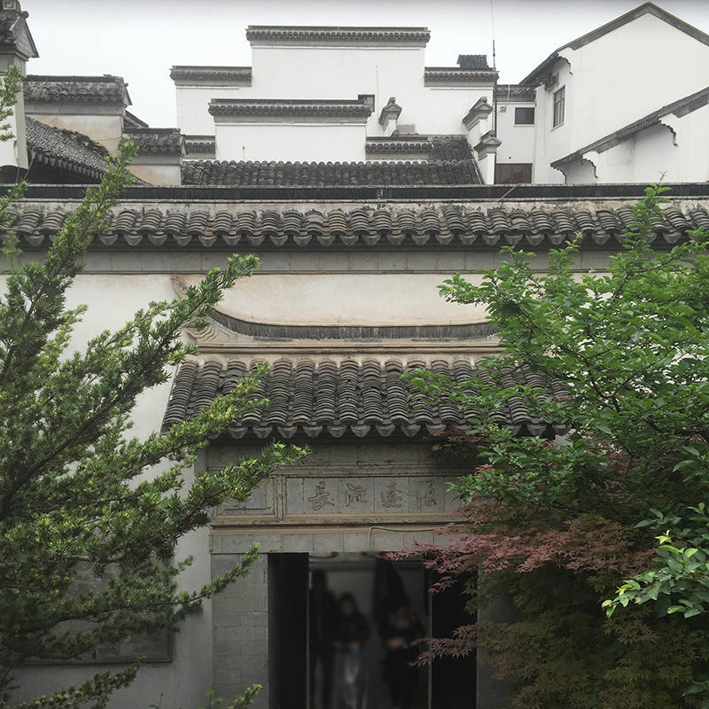
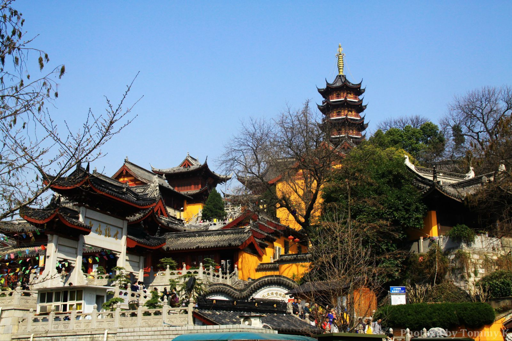
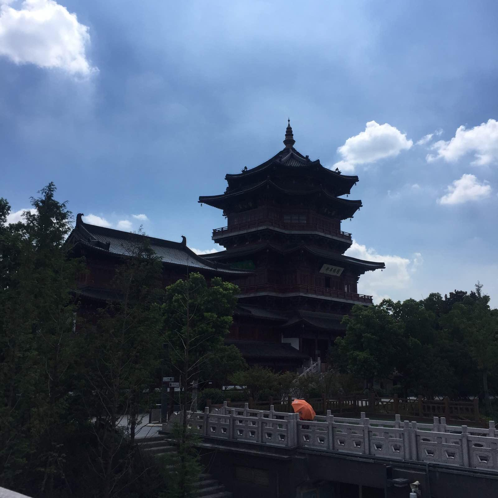
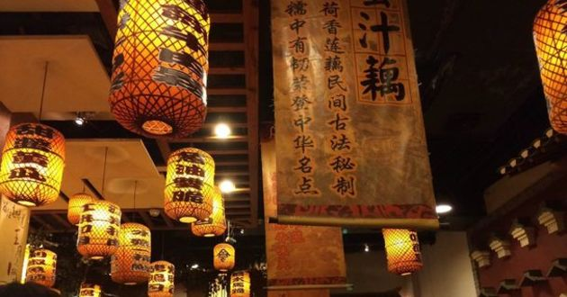

南京美景




南京概况
南京，简称“宁”，古称金陵、建康，是江苏省会、副省级市、南京都市圈核心城市，是国务院批复确定的中国东部地区重要的中心城市、
全国重要的科研教育基地和综合交通枢纽。南京地处中国东部地区、长江下游、濒江近海。
全市下辖11个区，总面积6597平方公里，2015年建成区面积923.8平方公里，常住人口823.6万，
城镇人口670.4万人，城镇化率81.4%，是长三角地区及华东地区唯一的特大城市。
南京是中国四大古都、首批国家历史文化名城，是中华文明的重要发祥地，历史上曾数次庇佑华夏之正朔，长期是中国南方的政治、
经济、文化中心。南京地区早在100至120万年前就有古人类活动，35至60多万年前已有南京猿人在南京汤山生活。
公元229年，吴大帝孙权在此建都，此后东晋、南朝的刘宋、萧齐、萧梁、陈均相继在此建都，故南京有“六朝古都”之称。
继此之后，南京又先后成为杨吴西都、南唐国都、南宋行都、明朝京师、太平天国天京、中华民国首都，故又称“十朝都会”。
南京是国家重要的科教中心，自古以来就是一座崇文重教的城市，有“天下文枢”、“东南第一学”的美誉，明清时期中国一半以上的状元均出自南京江南贡院。
截至2013年，南京有高等院校74所，其中211高校8所，仅次于北京上海；国家重点实验室25所、国家重点学科169个、两院院士83人，均居中国第三。
2017年世界轮滑锦标赛、2017年世界女排大奖赛总决赛、2017年世界青年沙滩排球锦标赛将陆续在南京举行。
大家印象
是一个美丽的城市，历史底蕴深厚，自然景观和人文景观都很不赖，有很多很好看的地方能够领略到浓郁的文化气息。
总统府印象深刻，夜游秦淮河也很不错。强烈建议去参观南京大屠杀纪念馆。
走进南京
南京旅游资源丰富，名胜古迹众多。南京旅游景点包括了中山陵、南京大屠杀遇难同胞纪念馆、夫子庙、南京长江大桥、明孝陵等。
南京旅游局为方便游客旅游南京，与媒体合作整出十条南京的精品旅游线路。分别是：六朝怀古游、大明胜迹游、郑和遗踪游、民国文化游、
宗教文化游、秦淮风情游、科教修学游、滨江风貌游、温泉度假游、乡村美景游。 南京又是十朝都会，“衣冠文物盛于东南和都市大气之特色，
有深厚的文化内涵，透露出几分儒雅之气，豪杰之风，斯文秀美，亢朗冲融。”同时南京作为天下文枢所在，文化底蕴深厚，所谓“菜佣酒保也有六朝烟水气”。
除了著名的南京旅游景点可供游客游玩之外，南京的美食也不容错过。南京的饮食以京苏菜（金陵菜）和清真菜著名。
金陵菜的四大名菜包括松鼠鱼、蛋烧卖、美人肝、凤尾虾。制作金陵大菜的知名菜馆有绿柳居菜馆、马祥兴菜馆等。
最佳季节：3-5月，9-10月。春天的南京，梅花山梅花盛开，景致着迷。秋天，栖霞山上红叶如火，层林尽染。
建议游玩：3-5天
三日游
DAY1 灵谷寺 -中山陵 -明孝陵 -明城墙
DAY2 栖霞山 -栖霞寺 -南京大学
DAY3 老门东历史街区 -乌衣巷 -夫子庙 -秦淮河
四日游
DAY1 南京总统府 -江宁织造博物馆 -甘家大院
DAY2 中山陵 -明孝陵 -紫金山天文台
DAY3 老门东历史街区 -乌衣巷 -夫子庙 -秦淮河
DAY4 雨花台烈士陵园 -南京大屠杀遇难同胞纪念馆 -玄武湖
五日游
DAY1 老门东历史街区 -乌衣巷 -夫子庙 -秦淮河
DAY2 紫金山天文台 -中山陵 -明孝陵
DAY3 鸡鸣寺 -玄武湖公园 -明城墙
DAY4 南京总统府 -1912酒吧街 -南京大屠杀遇难同胞纪念馆 -雨花台烈士陵园
DAY5 栖霞山 -栖霞寺
七日游
DAY1 夫子庙 -秦淮河
DAY2 南京总统府 -南京图书馆 -中央饭店
DAY3 明故宫遗址公园 -南京博物馆
DAY4 中山陵 -明孝陵 -灵谷寺
DAY5 玄武湖 -鸡鸣寺 -南京古生物博物馆 -狮子桥
DAY6 雨花台烈士陵园 -雨花台
DAY7 菊花台九烈士墓